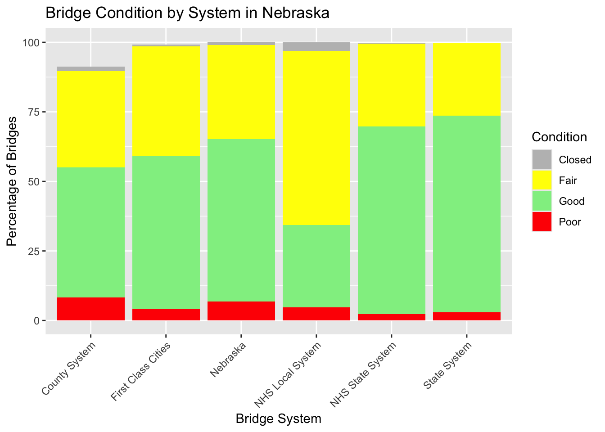

library(ggplot2)
library(dplyr)
Attaching package: 'dplyr'The following objects are masked from 'package:stats':
filter, lagThe following objects are masked from 'package:base':
intersect, setdiff, setequal, unionlibrary(tidyr)
data <- data.frame(
System = c("County System", "First Class Cities", "State System", "NHS State System",
"NHS Local System", "Nebraska"),
Good = c(46.7, 55.0, 70.7, 67.5, 29.7, 58.3),
Fair = c(34.7, 39.5, 26.2, 29.8, 62.5, 33.9),
Poor = c(8.3, 4.1, 2.9, 2.3, 4.7, 6.9),
Closed = c(1.5, 0.6, 0.0, 0.1, 3.1, 1.1)
)
data_long <- data |>
pivot_longer(cols = Good:Closed, names_to = "Condition", values_to = "Percentage")
ggplot(data_long, aes(x = System, y = Percentage, fill = Condition)) +
geom_bar(stat = "identity") +
labs(title = "Bridge Condition by System in Nebraska",
x = "Bridge System",
y = "Percentage of Bridges") +
theme(axis.text.x = element_text(angle = 45, hjust = 1)) +
scale_fill_manual(values = c("Good" = "lightgreen", "Fair" = "yellow", "Poor" = "red", "Closed" = "gray"))
library(dplyr)